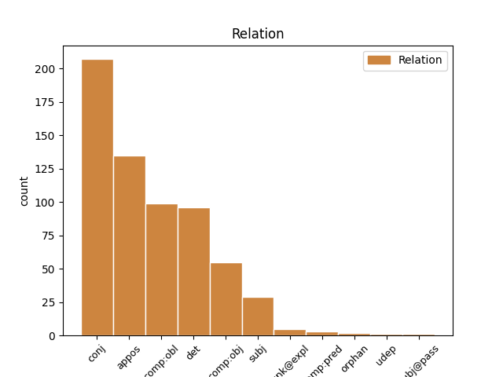
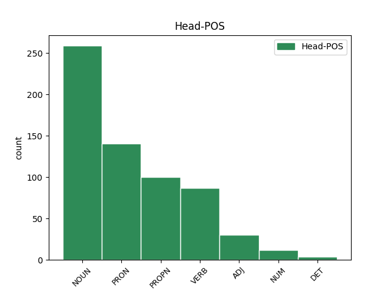
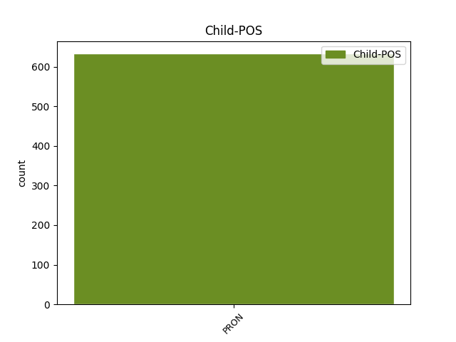

Distribution of features within this leaf



Agreement Rules sorted by frequency.
- When the dependent token is the conjunct(conj) of the head token, and the dependent token is PRON.
1 Din _ _ _ _ 0 _ _ _
2 vreo _ _ _ _ 0 _ _ _
3 boală _ _ _ _ 0 _ _ _
4 adecă _ _ _ _ 0 _ _ _
5 grea _ _ _ _ 0 _ _ _
6 , _ _ _ _ 0 _ _ _
7 răzmiriță răzmeriță NOUN Ncfsrn Case=Acc,Nom|Definite=Ind|Gender=Fem|Number=Sing 0 _ _ _
8 și _ _ _ _ 0 _ _ _
9 cealelalte celălalt PRON Pd3fpr Case=Acc,Nom|Gender=Fem|Number=Plur|Person=3|PronType=Dem 7 conj _ ref=PART_V_CAP_4.3b|SpaceAfter=No
10 . _ _ _ _ 0 _ _ _
1 Cînd _ _ _ _ 0 _ _ _
2 adecă _ _ _ _ 0 _ _ _
3 lucrul _ _ _ _ 0 _ _ _
4 ce _ _ _ _ 0 _ _ _
5 să _ _ _ _ 0 _ _ _
6 cere _ _ _ _ 0 _ _ _
7 iaste _ _ _ _ 0 _ _ _
8 o _ _ _ _ 0 _ _ _
9 vie _ _ _ _ 0 _ _ _
10 , _ _ _ _ 0 _ _ _
11 și _ _ _ _ 0 _ _ _
12 cuvintele _ _ _ _ 0 _ _ _
13 amîndurora _ _ _ _ 0 _ _ _
14 prigonitelor _ _ _ _ 0 _ _ _
15 părți _ _ _ _ 0 _ _ _
16 , _ _ _ _ 0 _ _ _
17 au _ _ _ _ 0 _ _ _
18 puteare _ _ _ _ 0 _ _ _
19 deopotrivă _ _ _ _ 0 _ _ _
20 , _ _ _ _ 0 _ _ _
21 cel acela PRON Pd3msr Case=Acc,Nom|Gender=Masc|Number=Sing|Person=3|PronType=Dem 0 _ _ _
22 ce _ _ _ _ 0 _ _ _
23 să _ _ _ _ 0 _ _ _
24 află _ _ _ _ 0 _ _ _
25 în _ _ _ _ 0 _ _ _
26 stăpînirea _ _ _ _ 0 _ _ _
27 viei _ _ _ _ 0 _ _ _
28 acela acela PRON Pd3msr Case=Acc,Nom|Gender=Masc|Number=Sing|Person=3|PronType=Dem 21 appos _ ref=PART_V_CAP_2.3b
29 are _ _ _ _ 0 _ _ _
30 dreptate _ _ _ _ 0 _ _ _
31 . _ _ _ _ 0 _ _ _
1 Prea _ _ _ _ 0 _ _ _
2 Înălțate _ _ _ _ 0 _ _ _
3 Doamne _ _ _ _ 0 _ _ _
4 ! _ _ _ _ 0 _ _ _
5 După _ _ _ _ 0 _ _ _
6 luminată _ _ _ _ 0 _ _ _
7 porunca _ _ _ _ 0 _ _ _
8 Mării _ _ _ _ 0 _ _ _
9 tale _ _ _ _ 0 _ _ _
10 adunîndu _ _ _ _ 0 _ _ _
11 -ne _ _ _ _ 0 _ _ _
12 în _ _ _ _ 0 _ _ _
13 multe _ _ _ _ 0 _ _ _
14 rînduri _ _ _ _ 0 _ _ _
15 cu _ _ _ _ 0 _ _ _
16 toții _ _ _ _ 0 _ _ _
17 la _ _ _ _ 0 _ _ _
18 un _ _ _ _ 0 _ _ _
19 loc _ _ _ _ 0 _ _ _
20 , _ _ _ _ 0 _ _ _
21 am _ _ _ _ 0 _ _ _
22 cetit _ _ _ _ 0 _ _ _
23 cu _ _ _ _ 0 _ _ _
24 luare _ _ _ _ 0 _ _ _
25 aminte _ _ _ _ 0 _ _ _
26 Pravila _ _ _ _ 0 _ _ _
27 ce _ _ _ _ 0 _ _ _
28 s _ _ _ _ 0 _ _ _
29 -au _ _ _ _ 0 _ _ _
30 alcătuit _ _ _ _ 0 _ _ _
31 de _ _ _ _ 0 _ _ _
32 cătră _ _ _ _ 0 _ _ _
33 Măria mărie NOUN Ncfsry Case=Acc,Nom|Definite=Def|Gender=Fem|Number=Sing 0 _ _ _
34 ta tău PRON Ps2fsrs Case=Acc,Nom|Gender=Fem|Number=Sing|Number[psor]=Sing|Person=2|PronType=Prs 33 det _ ref=ANAFORA.1|SpaceAfter=No
35 , _ _ _ _ 0 _ _ _
36 și _ _ _ _ 0 _ _ _
37 ne _ _ _ _ 0 _ _ _
38 pliroforisirăm _ _ _ _ 0 _ _ _
39 , _ _ _ _ 0 _ _ _
40 că _ _ _ _ 0 _ _ _
41 alcătuirea _ _ _ _ 0 _ _ _
42 aceștii _ _ _ _ 0 _ _ _
43 Pravili _ _ _ _ 0 _ _ _
44 este _ _ _ _ 0 _ _ _
45 o _ _ _ _ 0 _ _ _
46 deslușire _ _ _ _ 0 _ _ _
47 a _ _ _ _ 0 _ _ _
48 Pravililor _ _ _ _ 0 _ _ _
49 Împărătești _ _ _ _ 0 _ _ _
50 , _ _ _ _ 0 _ _ _
51 ce _ _ _ _ 0 _ _ _
52 să _ _ _ _ 0 _ _ _
53 obicinuesc _ _ _ _ 0 _ _ _
54 aici _ _ _ _ 0 _ _ _
55 în _ _ _ _ 0 _ _ _
56 pămîntul _ _ _ _ 0 _ _ _
57 nostru _ _ _ _ 0 _ _ _
58 , _ _ _ _ 0 _ _ _
59 și _ _ _ _ 0 _ _ _
60 a _ _ _ _ 0 _ _ _
61 vechilor _ _ _ _ 0 _ _ _
62 , _ _ _ _ 0 _ _ _
63 și _ _ _ _ 0 _ _ _
64 a _ _ _ _ 0 _ _ _
65 canonisitelor _ _ _ _ 0 _ _ _
66 obiceaiuri _ _ _ _ 0 _ _ _
67 ale _ _ _ _ 0 _ _ _
68 pămîntului _ _ _ _ 0 _ _ _
69 , _ _ _ _ 0 _ _ _
70 nefiind _ _ _ _ 0 _ _ _
71 împotrivitoare _ _ _ _ 0 _ _ _
72 celor _ _ _ _ 0 _ _ _
73 vechi _ _ _ _ 0 _ _ _
74 urmate _ _ _ _ 0 _ _ _
75 pînă _ _ _ _ 0 _ _ _
76 acum _ _ _ _ 0 _ _ _
77 . _ _ _ _ 0 _ _ _
1 Cînd _ _ _ _ 0 _ _ _
2 pentru _ _ _ _ 0 _ _ _
3 aceaiași _ _ _ _ 0 _ _ _
4 provlimă _ _ _ _ 0 _ _ _
5 să _ _ _ _ 0 _ _ _
6 pune _ _ _ _ 0 _ _ _
7 înainte _ _ _ _ 0 _ _ _
8 de _ _ _ _ 0 _ _ _
9 cătră _ _ _ _ 0 _ _ _
10 unul _ _ _ _ 0 _ _ _
11 și _ _ _ _ 0 _ _ _
12 același _ _ _ _ 0 _ _ _
13 doao _ _ _ _ 0 _ _ _
14 , _ _ _ _ 0 _ _ _
15 sau _ _ _ _ 0 _ _ _
16 mai _ _ _ _ 0 _ _ _
17 multe _ _ _ _ 0 _ _ _
18 cărți _ _ _ _ 0 _ _ _
19 împotrivitoare împotrivitor ADJ Afpfprn Case=Acc,Nom|Definite=Ind|Degree=Pos|Gender=Fem|Number=Plur 0 _ _ _
20 una _ _ _ _ 0 _ _ _
21 altia altul PRON Pi3fso Case=Dat,Gen|Gender=Fem|Number=Sing|Person=3|PronType=Ind 19 comp:obl _ ref=PART_V_CAP_2a.30|SpaceAfter=No
22 , _ _ _ _ 0 _ _ _
23 n- _ _ _ _ 0 _ _ _
24 are _ _ _ _ 0 _ _ _
25 puteare _ _ _ _ 0 _ _ _
26 niciuna _ _ _ _ 0 _ _ _
27 . _ _ _ _ 0 _ _ _
1 Cînd _ _ _ _ 0 _ _ _
2 la _ _ _ _ 0 _ _ _
3 doi _ _ _ _ 0 _ _ _
4 inși _ _ _ _ 0 _ _ _
5 să _ _ _ _ 0 _ _ _
6 va _ _ _ _ 0 _ _ _
7 pune _ _ _ _ 0 _ _ _
8 lucrul _ _ _ _ 0 _ _ _
9 în _ _ _ _ 0 _ _ _
10 păstrare _ _ _ _ 0 _ _ _
11 , _ _ _ _ 0 _ _ _
12 iaste _ _ _ _ 0 _ _ _
13 datoriu _ _ _ _ 0 _ _ _
14 fiteșcare _ _ _ _ 0 _ _ _
15 dintr- _ _ _ _ 0 _ _ _
16 înșii _ _ _ _ 0 _ _ _
17 , _ _ _ _ 0 _ _ _
18 să _ _ _ _ 0 _ _ _
19 -l _ _ _ _ 0 _ _ _
20 dea _ _ _ _ 0 _ _ _
21 cînd _ _ _ _ 0 _ _ _
22 să _ _ _ _ 0 _ _ _
23 va _ _ _ _ 0 _ _ _
24 cere _ _ _ _ 0 _ _ _
25 , _ _ _ _ 0 _ _ _
26 și _ _ _ _ 0 _ _ _
27 de _ _ _ _ 0 _ _ _
28 -l _ _ _ _ 0 _ _ _
29 va _ _ _ _ 0 _ _ _
30 da _ _ _ _ 0 _ _ _
31 unul _ _ _ _ 0 _ _ _
32 dintr- _ _ _ _ 0 _ _ _
33 înșii _ _ _ _ 0 _ _ _
34 , _ _ _ _ 0 _ _ _
35 cu _ _ _ _ 0 _ _ _
36 lipsă _ _ _ _ 0 _ _ _
37 de _ _ _ _ 0 _ _ _
38 cît _ _ _ _ 0 _ _ _
39 au _ _ _ _ 0 _ _ _
40 fost _ _ _ _ 0 _ _ _
41 , _ _ _ _ 0 _ _ _
42 datoriu _ _ _ _ 0 _ _ _
43 iaste _ _ _ _ 0 _ _ _
44 și _ _ _ _ 0 _ _ _
45 acel _ _ _ _ 0 _ _ _
46 ce _ _ _ _ 0 _ _ _
47 l- el PRON Pp3msa--------w Case=Acc|Gender=Masc|Number=Sing|Person=3|PronType=Prs|Strength=Weak 49 comp:obj _ ref=PART_III_CAP_22.16|SpaceAfter=No
48 au _ _ _ _ 0 _ _ _
49 dat dat VERB Vmp--sm-p Gender=Masc|Number=Sing|Polarity=Pos|VerbForm=Part 0 _ _ _
50 , _ _ _ _ 0 _ _ _
51 și _ _ _ _ 0 _ _ _
52 celalalt _ _ _ _ 0 _ _ _
53 păstrătoriu _ _ _ _ 0 _ _ _
54 lipsa _ _ _ _ 0 _ _ _
55 lucrului _ _ _ _ 0 _ _ _
56 . _ _ _ _ 0 _ _ _
1 Cînd _ _ _ _ 0 _ _ _
2 pentru _ _ _ _ 0 _ _ _
3 aceaiași _ _ _ _ 0 _ _ _
4 provlimă _ _ _ _ 0 _ _ _
5 să _ _ _ _ 0 _ _ _
6 pune _ _ _ _ 0 _ _ _
7 înainte _ _ _ _ 0 _ _ _
8 de _ _ _ _ 0 _ _ _
9 cătră _ _ _ _ 0 _ _ _
10 unul _ _ _ _ 0 _ _ _
11 și _ _ _ _ 0 _ _ _
12 același _ _ _ _ 0 _ _ _
13 doao _ _ _ _ 0 _ _ _
14 , _ _ _ _ 0 _ _ _
15 sau _ _ _ _ 0 _ _ _
16 mai _ _ _ _ 0 _ _ _
17 multe _ _ _ _ 0 _ _ _
18 cărți _ _ _ _ 0 _ _ _
19 împotrivitoare împotrivitor ADJ Afpfprn Case=Acc,Nom|Definite=Ind|Degree=Pos|Gender=Fem|Number=Plur 0 _ _ _
20 una unul PRON Pi3fsr Case=Acc,Nom|Gender=Fem|Number=Sing|Person=3|PronType=Ind 19 subj _ ref=PART_V_CAP_2a.30
21 altia _ _ _ _ 0 _ _ _
22 , _ _ _ _ 0 _ _ _
23 n- _ _ _ _ 0 _ _ _
24 are _ _ _ _ 0 _ _ _
25 puteare _ _ _ _ 0 _ _ _
26 niciuna _ _ _ _ 0 _ _ _
27 . _ _ _ _ 0 _ _ _
1 Zise _ _ _ _ 0 _ _ _
2 Iisus _ _ _ _ 0 _ _ _
3 lui _ _ _ _ 0 _ _ _
4 : _ _ _ _ 0 _ _ _
5 Aceluia _ _ _ _ 0 _ _ _
6 ce _ _ _ _ 0 _ _ _
7 -i _ _ _ _ 0 _ _ _
8 spălat _ _ _ _ 0 _ _ _
9 nu _ _ _ _ 0 _ _ _
10 trebuiaște _ _ _ _ 0 _ _ _
11 să _ _ _ _ 0 _ _ _
12 -l _ _ _ _ 0 _ _ _
13 spăl _ _ _ _ 0 _ _ _
14 , _ _ _ _ 0 _ _ _
15 numai _ _ _ _ 0 _ _ _
16 picioarele _ _ _ _ 0 _ _ _
17 , _ _ _ _ 0 _ _ _
18 că _ _ _ _ 0 _ _ _
19 iaste _ _ _ _ 0 _ _ _
20 tot _ _ _ _ 0 _ _ _
21 curat _ _ _ _ 0 _ _ _
22 ; _ _ _ _ 0 _ _ _
23 și _ _ _ _ 0 _ _ _
24 voi _ _ _ _ 0 _ _ _
25 sânteți _ _ _ _ 0 _ _ _
26 curați curat ADJ Afpmprn Case=Acc,Nom|Definite=Ind|Degree=Pos|Gender=Masc|Number=Plur 0 _ _ _
27 , _ _ _ _ 0 _ _ _
28 ce _ _ _ _ 0 _ _ _
29 nu _ _ _ _ 0 _ _ _
30 toți tot PRON Pi3mpr Case=Acc,Nom|Gender=Masc|Number=Plur|Person=3|PronType=Ind 26 orphan _ ref=IOAN13.10|SpaceAfter=No
31 . _ _ _ _ 0 _ _ _
1 Şi _ _ _ _ 0 _ _ _
2 să _ _ _ _ 0 _ _ _
3 pritciia _ _ _ _ 0 _ _ _
4 unul unul PRON Pi3msr Case=Acc,Nom|Gender=Masc|Number=Sing|Person=3|PronType=Ind 7 unk@expl _ ref=IOAN6.52
5 cu _ _ _ _ 0 _ _ _
6 alalt _ _ _ _ 0 _ _ _
7 jidovii jidov NOUN Ncmpry Case=Acc,Nom|Definite=Def|Gender=Masc|Number=Plur 0 _ _ _
8 , _ _ _ _ 0 _ _ _
9 zicând _ _ _ _ 0 _ _ _
10 : _ _ _ _ 0 _ _ _
11 Cum _ _ _ _ 0 _ _ _
12 poate _ _ _ _ 0 _ _ _
13 Acesta _ _ _ _ 0 _ _ _
14 noao _ _ _ _ 0 _ _ _
15 da _ _ _ _ 0 _ _ _
16 trupul _ _ _ _ 0 _ _ _
17 să _ _ _ _ 0 _ _ _
18 -L _ _ _ _ 0 _ _ _
19 mâncăm _ _ _ _ 0 _ _ _
20 ? _ _ _ _ 0 _ _ _
1 Că _ _ _ _ 0 _ _ _
2 voi _ _ _ _ 0 _ _ _
3 carii _ _ _ _ 0 _ _ _
4 trebuia _ _ _ _ 0 _ _ _
5 pentru _ _ _ _ 0 _ _ _
6 vreame _ _ _ _ 0 _ _ _
7 fi _ _ _ _ 0 _ _ _
8 învățători _ _ _ _ 0 _ _ _
9 , _ _ _ _ 0 _ _ _
10 iară _ _ _ _ 0 _ _ _
11 trebue _ _ _ _ 0 _ _ _
12 a _ _ _ _ 0 _ _ _
13 vă _ _ _ _ 0 _ _ _
14 învăța _ _ _ _ 0 _ _ _
15 ce- _ _ _ _ 0 _ _ _
16 s _ _ _ _ 0 _ _ _
17 stihiile _ _ _ _ 0 _ _ _
18 începeniei _ _ _ _ 0 _ _ _
19 cuvintelor _ _ _ _ 0 _ _ _
20 lui _ _ _ _ 0 _ _ _
21 Dumnezău _ _ _ _ 0 _ _ _
22 , _ _ _ _ 0 _ _ _
23 și _ _ _ _ 0 _ _ _
24 sînteți _ _ _ _ 0 _ _ _
25 făcuți face VERB Vmp--pm-p Gender=Masc|Number=Plur|Polarity=Pos|VerbForm=Part 0 _ _ _
26 aceia acela PRON Pd3mpr Case=Acc,Nom|Gender=Masc|Number=Plur|Person=3|PronType=Dem 25 comp:pred _ ref=PAVEL_EVREI_5.12
27 cărora _ _ _ _ 0 _ _ _
28 vă _ _ _ _ 0 _ _ _
29 trebuiaște _ _ _ _ 0 _ _ _
30 lapte _ _ _ _ 0 _ _ _
31 , _ _ _ _ 0 _ _ _
32 și _ _ _ _ 0 _ _ _
33 nu _ _ _ _ 0 _ _ _
34 mîncare _ _ _ _ 0 _ _ _
35 vîrtoasă _ _ _ _ 0 _ _ _
36 . _ _ _ _ 0 _ _ _
1 Hai _ _ _ _ 0 _ _ _
2 , _ _ _ _ 0 _ _ _
3 Arcoș _ _ _ _ 0 _ _ _
4 , _ _ _ _ 0 _ _ _
5 pașă _ _ _ _ 0 _ _ _
6 bătrîn _ _ _ _ 0 _ _ _
7 , _ _ _ _ 0 _ _ _
8 Cu _ _ _ _ 0 _ _ _
9 barba _ _ _ _ 0 _ _ _
10 băgată _ _ _ _ 0 _ _ _
11 -n _ _ _ _ 0 _ _ _
12 sin _ _ _ _ 0 _ _ _
13 , _ _ _ _ 0 _ _ _
14 Că _ _ _ _ 0 _ _ _
15 eu _ _ _ _ 0 _ _ _
16 ţie _ _ _ _ 0 _ _ _
17 că _ _ _ _ 0 _ _ _
18 ţi- _ _ _ _ 0 _ _ _
19 am _ _ _ _ 0 _ _ _
20 spus _ _ _ _ 0 _ _ _
21 La _ _ _ _ 0 _ _ _
22 mine _ _ _ _ 0 _ _ _
23 să _ _ _ _ 0 _ _ _
24 nu _ _ _ _ 0 _ _ _
25 mai _ _ _ _ 0 _ _ _
26 vii _ _ _ _ 0 _ _ _
27 Tot _ _ _ _ 0 _ _ _
28 în _ _ _ _ 0 _ _ _
29 luna _ _ _ _ 0 _ _ _
30 lui _ _ _ _ 0 _ _ _
31 Undrea _ _ _ _ 0 _ _ _
32 , _ _ _ _ 0 _ _ _
33 Cînd _ _ _ _ 0 _ _ _
34 sînt _ _ _ _ 0 _ _ _
35 în _ _ _ _ 0 _ _ _
36 puterea _ _ _ _ 0 _ _ _
37 mea _ _ _ _ 0 _ _ _
38 ; _ _ _ _ 0 _ _ _
39 Ci _ _ _ _ 0 _ _ _
40 pîn _ _ _ _ 0 _ _ _
41 luna _ _ _ _ 0 _ _ _
42 lui _ _ _ _ 0 _ _ _
43 Cuptori _ _ _ _ 0 _ _ _
44 , _ _ _ _ 0 _ _ _
45 Cînd _ _ _ _ 0 _ _ _
46 sînt _ _ _ _ 0 _ _ _
47 ofilit _ _ _ _ 0 _ _ _
48 de _ _ _ _ 0 _ _ _
49 sori _ _ _ _ 0 _ _ _
50 Şi _ _ _ _ 0 _ _ _
51 sînt _ _ _ _ 0 _ _ _
52 tot tot PRON Pi3msr Case=Acc,Nom|Gender=Masc|Number=Sing|Person=3|PronType=Ind 53 udep _ _
53 bătut bate VERB Vmp--sm-p Gender=Masc|Number=Sing|Polarity=Pos|VerbForm=Part 0 _ _ _
54 de _ _ _ _ 0 _ _ _
55 ploi _ _ _ _ 0 _ _ _
56 . _ _ _ _ 0 _ _ _
Disagree Examples:
1 Și _ _ _ _ 0 _ _ _
2 ce _ _ _ _ 0 _ _ _
3 înțelepciune _ _ _ _ 0 _ _ _
4 -i _ _ _ _ 0 _ _ _
5 aceasta _ _ _ _ 0 _ _ _
6 ce _ _ _ _ 0 _ _ _
7 e _ _ _ _ 0 _ _ _
8 dată da VERB Vmp--sf-p--o Case=Dat,Gen|Gender=Fem|Number=Sing|Polarity=Pos|VerbForm=Part 0 _ _ _
9 lui el PRON Pp3msd--------s Case=Dat|Gender=Masc|Number=Sing|Person=3|PronType=Prs|Strength=Strong 8 comp:obl _ ref=MARC6.2|SpaceAfter=No
10 , _ _ _ _ 0 _ _ _
11 că _ _ _ _ 0 _ _ _
12 puteri _ _ _ _ 0 _ _ _
13 ca _ _ _ _ 0 _ _ _
14 aceastea _ _ _ _ 0 _ _ _
15 de _ _ _ _ 0 _ _ _
16 mînile _ _ _ _ 0 _ _ _
17 lui _ _ _ _ 0 _ _ _
18 să _ _ _ _ 0 _ _ _
19 facu _ _ _ _ 0 _ _ _
20 ? _ _ _ _ 0 _ _ _
1 Și _ _ _ _ 0 _ _ _
2 -l el PRON Pp3msa--------w Case=Acc|Gender=Masc|Number=Sing|Person=3|PronType=Prs|Strength=Weak 3 comp:obj _ ref=MARC6.20
3 socotiia socoti NOUN Ncfsry Case=Acc,Nom|Definite=Def|Gender=Fem|Number=Sing 0 _ _ _
4 pre _ _ _ _ 0 _ _ _
5 el _ _ _ _ 0 _ _ _
6 și _ _ _ _ 0 _ _ _
7 ascultînd _ _ _ _ 0 _ _ _
8 pre _ _ _ _ 0 _ _ _
9 el _ _ _ _ 0 _ _ _
10 , _ _ _ _ 0 _ _ _
11 multe _ _ _ _ 0 _ _ _
12 făcea _ _ _ _ 0 _ _ _
13 și _ _ _ _ 0 _ _ _
14 cu _ _ _ _ 0 _ _ _
15 drag _ _ _ _ 0 _ _ _
16 asculta _ _ _ _ 0 _ _ _
17 pre _ _ _ _ 0 _ _ _
18 el _ _ _ _ 0 _ _ _
19 . _ _ _ _ 0 _ _ _
1 Și _ _ _ _ 0 _ _ _
2 altele altul PRON Pi3fpr Case=Acc,Nom|Gender=Fem|Number=Plur|Person=3|PronType=Ind 0 _ _ _
3 multe _ _ _ _ 0 _ _ _
4 sînt _ _ _ _ 0 _ _ _
5 carele care PRON Pw3msry Case=Acc,Nom|Definite=Def|Gender=Masc|Number=Sing|Person=3|PronType=Int,Rel 2 appos _ ref=MARC7.4
6 luară _ _ _ _ 0 _ _ _
7 a _ _ _ _ 0 _ _ _
8 ținea _ _ _ _ 0 _ _ _
9 cumu _ _ _ _ 0 _ _ _
10 -s _ _ _ _ 0 _ _ _
11 : _ _ _ _ 0 _ _ _
12 spălarea _ _ _ _ 0 _ _ _
13 păharălor _ _ _ _ 0 _ _ _
14 și _ _ _ _ 0 _ _ _
15 a _ _ _ _ 0 _ _ _
16 urcioarelor _ _ _ _ 0 _ _ _
17 și _ _ _ _ 0 _ _ _
18 a _ _ _ _ 0 _ _ _
19 căldărilor _ _ _ _ 0 _ _ _
20 și _ _ _ _ 0 _ _ _
21 a _ _ _ _ 0 _ _ _
22 paturelor _ _ _ _ 0 _ _ _
23 . _ _ _ _ 0 _ _ _
1 Atunci _ _ _ _ 0 _ _ _
2 prinzînd _ _ _ _ 0 _ _ _
3 mîna _ _ _ _ 0 _ _ _
4 orbului _ _ _ _ 0 _ _ _
5 , _ _ _ _ 0 _ _ _
6 dusă duce VERB Vmp--sf-p--r Case=Acc,Nom|Gender=Fem|Number=Sing|Polarity=Pos|VerbForm=Part 0 _ _ _
7 -l el PRON Pp3msa--------w Case=Acc|Gender=Masc|Number=Sing|Person=3|PronType=Prs|Strength=Weak 6 comp:obj _ ref=MARC8.23
8 pre _ _ _ _ 0 _ _ _
9 el _ _ _ _ 0 _ _ _
10 afară _ _ _ _ 0 _ _ _
11 den _ _ _ _ 0 _ _ _
12 oraș _ _ _ _ 0 _ _ _
13 și _ _ _ _ 0 _ _ _
14 scuepi _ _ _ _ 0 _ _ _
15 în _ _ _ _ 0 _ _ _
16 ochii _ _ _ _ 0 _ _ _
17 lui _ _ _ _ 0 _ _ _
18 , _ _ _ _ 0 _ _ _
19 puindu _ _ _ _ 0 _ _ _
20 -Și _ _ _ _ 0 _ _ _
21 mînile _ _ _ _ 0 _ _ _
22 spre _ _ _ _ 0 _ _ _
23 el _ _ _ _ 0 _ _ _
24 , _ _ _ _ 0 _ _ _
25 întrebă _ _ _ _ 0 _ _ _
26 pre _ _ _ _ 0 _ _ _
27 el _ _ _ _ 0 _ _ _
28 ce _ _ _ _ 0 _ _ _
29 veade _ _ _ _ 0 _ _ _
30 . _ _ _ _ 0 _ _ _
1 Iară _ _ _ _ 0 _ _ _
2 el _ _ _ _ 0 _ _ _
3 răspunzînd _ _ _ _ 0 _ _ _
4 zise _ _ _ _ 0 _ _ _
5 Lui _ _ _ _ 0 _ _ _
6 : _ _ _ _ 0 _ _ _
7 Învățătoriule _ _ _ _ 0 _ _ _
8 , _ _ _ _ 0 _ _ _
9 aceastea _ _ _ _ 0 _ _ _
10 toate _ _ _ _ 0 _ _ _
11 le- el PRON Pp3fpa--------w Case=Acc|Gender=Fem|Number=Plur|Person=3|PronType=Prs|Strength=Weak 13 comp:obj _ ref=MARC10.20|SpaceAfter=No
12 am _ _ _ _ 0 _ _ _
13 păzit păzi VERB Vmp--sm-p Gender=Masc|Number=Sing|Polarity=Pos|VerbForm=Part 0 _ _ _
14 den _ _ _ _ 0 _ _ _
15 tinereațele _ _ _ _ 0 _ _ _
16 meale _ _ _ _ 0 _ _ _
17 . _ _ _ _ 0 _ _ _